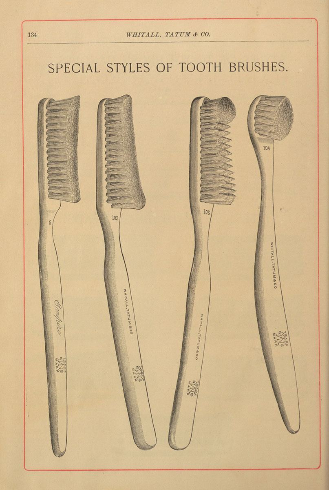
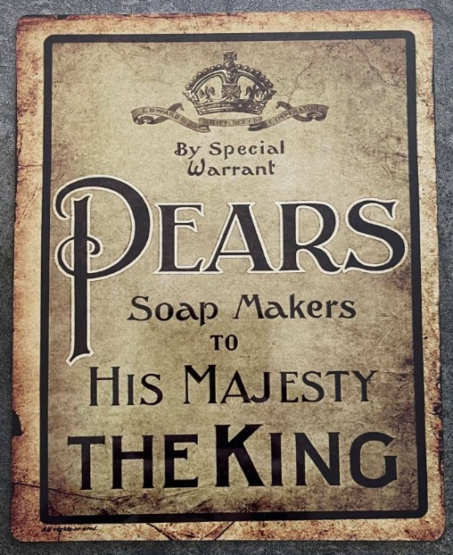

Marine chronometer,
Royal Museum Greenwich
.

Various styles of the first mass-produced toothbrushes, 1886. From the historica collection of
National Library of Medicine
.

Metal wall sign advertising Pear's Soap. From the collection of the
British Metal Signs
, Knockin, UK.
Note taking with a pencil. Featured is well-recognised traditional yellow Chinese royalty and prosperity colour.
Voltaic pile is the sequence of Cu and Zn electrodes separated by porous layer impregnated with an electrolyte,
By Markkv - Own work, Wikipedia